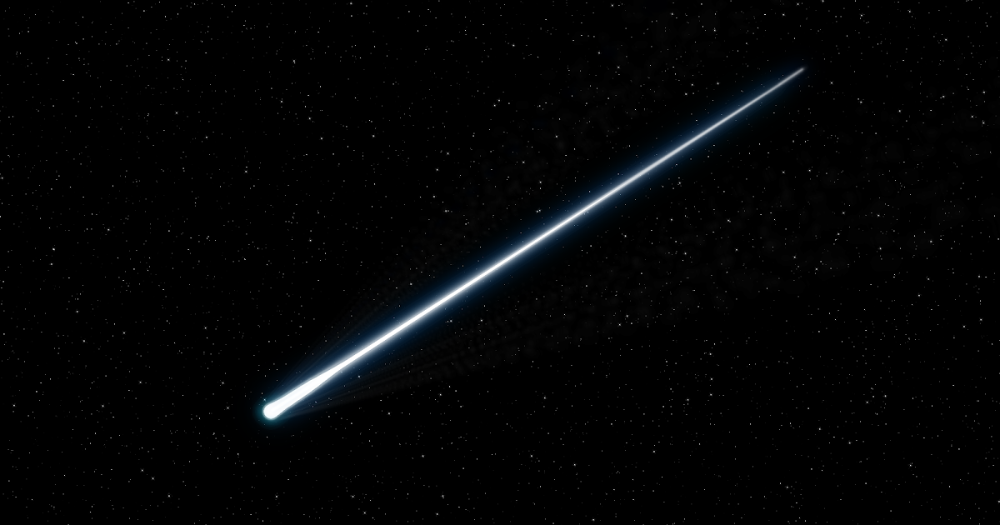

A shooting star is not actually a star as it turns out, it is a small piece of space rock or dust called a meteoroid that enters Earth's atmosphere at high speed. As it travels through the air, friction causes it to heat up and glow brightly, creating a streak of light across the sky known as a meteor. Most shooting stars burn up completely before reaching the ground, but the flash they leave behind is a beautiful reminder of the constant activity happening in our solar system. Check out this video for a more in-depth explanation on other objects in space.
